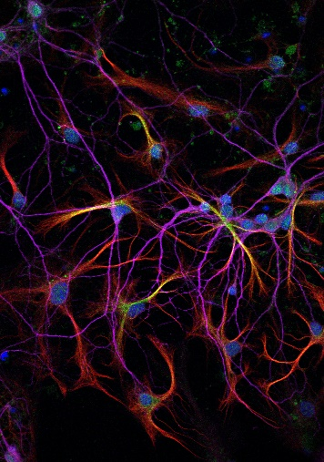
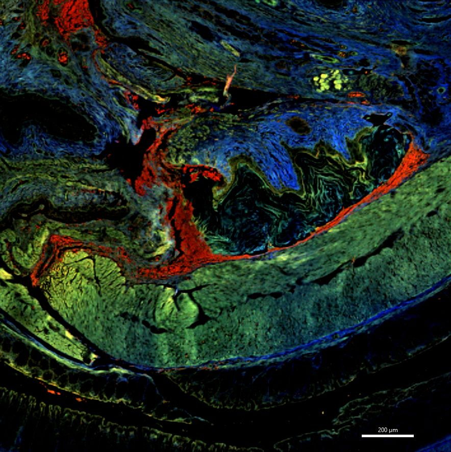
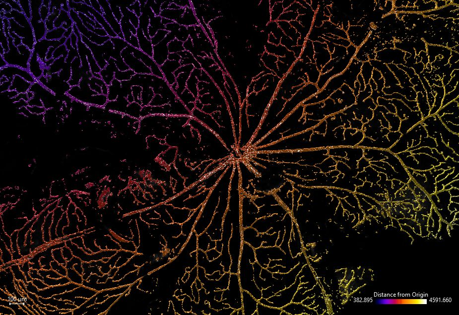

1st Place
Getting into the Gut of plumbing
Aparna Mahadevan (LKCMedicine)
The intestinal mesentery of a Prox1-GFP P0
newborn transgenic mouse pup was carefully dissected out from the
intestines and whole-mount immunostained for GFP (Prox1, green –
lymphatic vessels) and CD31 (red – blood vessels), covering the
complete plumbing of the intestines. The immunostained mesentery was
flat-mounted on a slide with spacers and imaged on the Carl Zeiss
LSM710 inverted confocal microscope using C-Apochromat 40X/1.2 W
objective, 0.6X zoom, 561 and 488 lasers, z-stack and tile functions.
Images were stitched on Imaris and further processed using its maximum
intensity projection and smoothening functions. As can be seen from
the image, the intestines have a beautiful plumbing system of
lymphatic and blood vasculature that drain into the mesenteric sac at
the root (centre). The scale bar corresponds to 700um.

2nd Place
Bioluminescent aquatic beauty
Arun Kumar Kaliya Perumal and Philip
Ingham (LKCMedicine)
A red fluorescent-illuminated skeleton of an
Alizarin Red stained live adult casper zebrafish imaged with ZEISS
Axio Zoom.V16 - Stereo Zoom Microscope in DsRed channel. Image taken
as 5 separate tiles and stitched using ImageJ. Scale bar - 1000um.

3rd Place
Pretty paracetamol
Harsha Mahabaleshwar (LKCMedicine)
Powdered paracetamol (Panadol) dissolved in 50%
ethanol to initiate crystallization and imaged on Leica DM5500
microscope using polarized light through HC PL Apo 10x/0.4 dry
objective. Scale bar indicates 100µm. The image shows the vibrant
colours of paracetamol crystals due to birefringence.
❮
❯
NOBIC Image Contest 2023
NOBIC has organised an image contest for users of NOBIC imaging
facilities (AOBIP at LKCMedicine and ABIF at SCELSE) following in the
tradition of NOBIC Image Contest 2021. The contest was open for
image submission between 15th June and 1st August 2023. We have received
20 images which were then anonymously evaluated by an international
panel of judges comprising representatives from academia and industry:
- Prof. Peter Török, NOBIC, NTU, Singapore, panel chair
- Dr. Ma Xiao Xiao, A*STAR Microscopy Platform, Singapore, panel vice
chair
- Dr. Sohail Ahmed, United Kingdom, formerly of the Institute of
Medical Biology, A*STAR, Singapore
- Dr. Astrid Bjørkøy, Norwegian University of Science and Technology,
Norway
- Dr. Samuel Ko, Carl Zeiss Pte Ltd, Singapore
- Dr. Marie Kodedová, Institute of Physiology of the Czech Academy of
Sciences, Czech Republic
In the first round, the judges selected 10 finalists and in the second
round they selected 3 winners from among the finalists. We'd like to
congratulate here to the winners and finalists and to express our thanks
to the panel of judges. Last but not least, we'd like to thank all
participants of the contest. There were more great images than there
could be finalists. We hope many more equally fascinating images will be
acquired at NOBIC Facilities and we are looking forward to helping you
along the journey.
Prizes for the winners were contributed the contest sponsor Carl Zeiss
Pte Ltd.

For more details refer to the contest announcement.
Other Finalists (in alphabetical order of image
titles):

Entangled
Vibhavari Aysha Lee-Bansal and Soon Hui
Rong (LKCMedicine)
Confocal image of primary hippocampal co-culture
showing astrocytes (red) entangled with neurons (magenta). Cells were
co-stained with TEF, a circadian clock associated protein, (green) to
show differential localization in astrocytes (cytoplasmic) and neurons
(nuclear). Nuclei were labeled with Hoechst (dark blue). Image was taken
on Carl Zeiss LSM 800 with a Plan-Apochromat 40x oil immersion lens.
Whole width of image is 200uM.

Exploring the Tree of Life within – Unveiling
the Beautiful Airway Arteries
Aravind Sivakumar (IMCB, A*STAR)
This image captures the pulmonary airway tree and
the intricate network of the pulmonary arterial vessels that are closely
follow its architecture in a single lung lobe. The airway tree's
bronchial branches form a mesmerizing pattern, resembling delicate
fractals as they branch. the Pulmonary artery also follows the branching
pattern to a large extent, playing critical roles in ensuring efficient
circulation of blood for oxygenation.

Gut Feeling
Esther Koh (LKCMedicine) and Png Chin
Wen (Department of Microbiology and Immunology, NUS)
Colon section stained with haematoxylin and eosin.
A serendipitous discovery of fluorescence in histological stains. Blue,
green and red fluorescence captured using the LSM800 confocal
microscope. Twelve fields of view stitched together (10x Plan Apochromat
0.45NA objective).

iNetwork
Aparna Mahadevan (LKCMedicine)
Retina from a 2-month-old mouse was dissected and
stained with Texas-Red conjugated Lycopersicon esculentum (tomato)
lectin to visualize the blood vascular network. The retina was
flat-mounted on a depression slide and imaged on the Carl Zeiss LSM800
inverted scanning confocal microscope using Plan-Apochromat 20x/0.80
objective, 561 nm laser, z-stack and tile function. The raw images were
stitched using Imaris Stitcher and further processed on Imaris (9.9.1)
using its maximum intensity projection and brightness-contrast
functions. This image was surface-rendered and colour coded to distance
from the origin. The scale bar is 100um.

Kaleidoscopic walls
Choo Pei Yi (SCELSE)
Enterococcus faecalis cells stained for newly
synthesized cell wall. Three different colored cell wall labelling
fluorescent probes in the sequence of green, red and blue were added one
after another in short pulses, revealing the age of the cell wall. The
final image was acquired using the Carl Zeiss ELYRA PS.1 and processed
via Structured illumination microscopy (SIM) at 100x magnification.
Scale bar: 2 μm

Palm fronds in acid
Harsha Mahabaleshwar (LKCMedicine)
A drop of citric acid solution on a glass slide
was gently heated to initiate crystallization and imaged on Leica DM5500
microscope using polarized light through HCX PL Fluotar 1.25x/0.04 dry
objective. The image was further processed using the crop function in
Fiji/ImageJ. Scale bar indicates 1mm. The image shows the intricate
patterns and vibrant colours of citric acid crystals due to
birefringence.

This is how fish smell!
King Yee Cheung (LKCMedicine)
Taken on the Upright Confocal LSM800 with a 40X
water objective, 0.5x zoom, 2048 x 2048 px, scale bar = 100 micrometres.
The image shows the adult zebrafish (dissected) olfactory organ. It is
remarkable and surprising to learn of their beautiful 3D rosette shaped
morphology. The zebrafish line used was Tg(cldnh:eGFP). The GFP is
driven by a cldnh gene promoter. Cldnh in humans is normally involved in
retinal development, but in the zebrafish it is expressed in sensory
cells. Here it is strongly expressed in many classes of olfactory
sensory neurons (green), which bind to odorants in the external
environment and give rise to the sense of smell. The organ is stained
with Alexa Fluor 568 phalloidin, which shows F-actin structures, a key
cytoskeletal component (magenta).